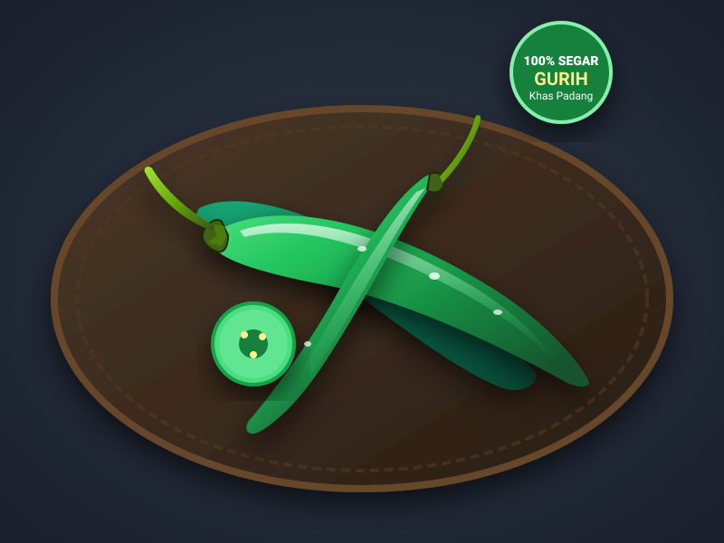

Cabai Hijau:
Gak Bikin Mules, Malah Bikin Nambah Nasi!
Cabai hijau adalah bukti bahwa makanan pedas gak harus bikin telinga berdengung! Dengan rasa pedas yang lembut dan aroma segar alami, cabai hijau jadi magnet utama di etalase Rumah Makan Padang.

Uji Pengetahuan: Kuis Sambal Ijo Sejati
Pilih jawaban yang paling tepat di 3 pertanyaan seru ini untuk mendapatkan gelar kehormatan kulinermu!
1. Kenapa cabai hijau warnanya hijau royo-royo?
2. Rahasia apa yang bikin Sambal Ijo Padang warnanya tetap hijau segar & tidak pahit?
3. Dibandingkan Cabai Rawit, sensasi makan Cabai Hijau itu bagaimana?
3 Rahasia Emas Sambal Ijo Anti-Pahit
Pernah bikin sambal ijo sendiri tapi rasanya langu atau pahit? Ini 3 kunci yang wajib kamu tahu:
1. Rebus Singkat (3-4 Menit)
Jangan rebus cabai hijau terlalu lama! Cukup 3 sampai 4 menit di air mendidih sampai sedikit layu. Kalau kelamaan, warna hijaunya akan berubah jadi cokelat gelap kusam.
2. Sentuhan Jeruk Nipis
Asam sitrat alami dari jeruk nipis berfungsi sebagai antioksidan alami yang mengunci warna hijau klorofil dan melunturkan rasa pahit (getah) cabai hijau muda.
3. Minyak Kelapa / Minyak Gurih
Gunakan minyak yang agak melimpah saat menumis ulekan sambal ijo. Minyak panas akan meresapkan aroma bawang merah dan tomat hijau ke dalam serat cabai secara sempurna.
Resep Interaktif: Sambal Ijo Padang (Lado Mudo)
Kelezatan asli khas Ranah Minang yang bikin sepiring nasi hangat langsung tandas! Centang tiap langkahnya:
Bahan-Bahan Sambal Ijo:
- 🫑 15 buah Cabai hijau besar (potong kasar)
- 〰️ 10 buah Cabai hijau keriting (biar ada gurih pedasnya)
- 🍅 3 buah Tomat hijau kecil segar
- 🧅 8 butir Bawang merah (kupas bersih)
- 🍋 1 sendok makan Air perasan jeruk nipis segar
- 🧂 1 sendok teh Garam dan 1/2 sdt kaldu jamur
- 🍳 6 sendok makan Minyak goreng panas